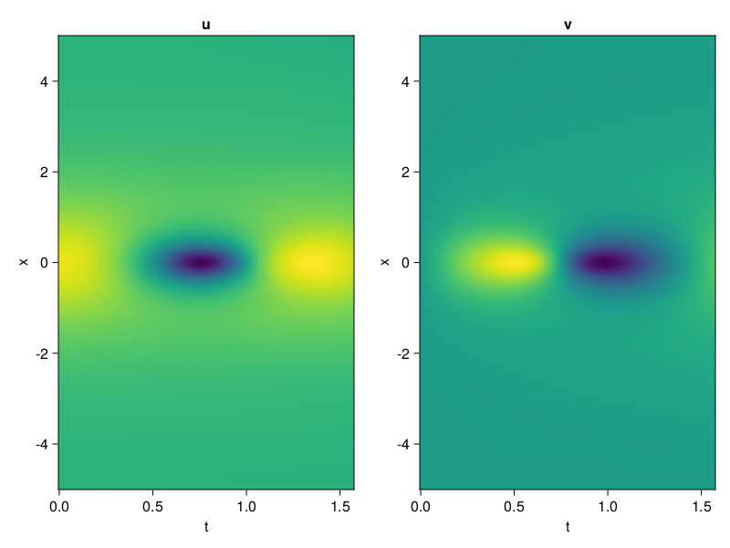
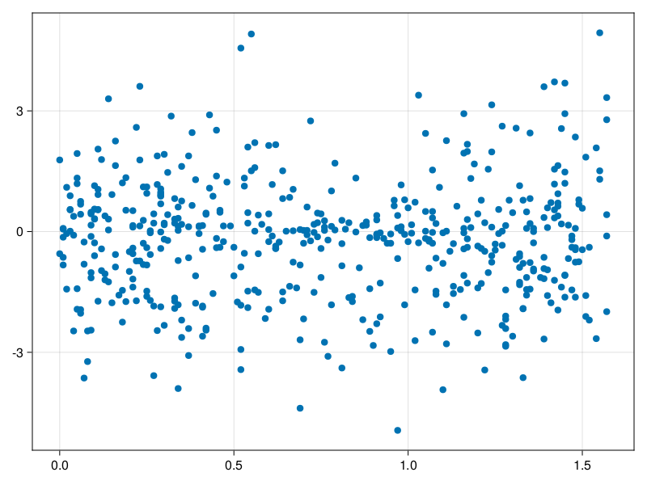

Schrödinger equation
The nonlinear Shrödinger equation is given by
\[\mathrm{i} \partial_t \psi=-\frac{1}{2} \sigma \partial_{x x} \psi-\beta|\psi|^2 \psi\]
Let $\sigma=\beta=1, \psi=u+v i$, the equation can be transformed into a system of partial differential equations
using ModelingToolkit, IntervalSets, Sophon, CairoMakie
using Optimization, OptimizationOptimJL
@parameters x,t
@variables u(..), v(..)
Dₜ = Differential(t)
Dₓ² = Differential(x)^2
eqs=[Dₜ(u(x,t)) ~ -Dₓ²(v(x,t))/2 - (abs2(v(x,t)) + abs2(u(x,t))) * v(x,t),
Dₜ(v(x,t)) ~ Dₓ²(u(x,t))/2 + (abs2(v(x,t)) + abs2(u(x,t))) * u(x,t)]
bcs = [u(x, 0.0) ~ 2sech(x),
v(x, 0.0) ~ 0.0,
u(-5.0, t) ~ u(5.0, t),
v(-5.0, t) ~ v(5.0, t)]
domains = [x ∈ Interval(-5.0, 5.0),
t ∈ Interval(0.0, π/2)]
@named pde_system = PDESystem(eqs, bcs, domains, [x,t], [u(x,t),v(x,t)])\[ \begin{align} \frac{\mathrm{d}}{\mathrm{d}t} u\left( x, t \right) =& - \frac{1}{2} \frac{\mathrm{d}}{\mathrm{d}x} \frac{\mathrm{d}}{\mathrm{d}x} v\left( x, t \right) - \left( \left|u\left( x, t \right)\right|^{2} + \left|v\left( x, t \right)\right|^{2} \right) v\left( x, t \right) \\ \frac{\mathrm{d}}{\mathrm{d}t} v\left( x, t \right) =& \frac{1}{2} \frac{\mathrm{d}}{\mathrm{d}x} \frac{\mathrm{d}}{\mathrm{d}x} u\left( x, t \right) + \left( \left|u\left( x, t \right)\right|^{2} + \left|v\left( x, t \right)\right|^{2} \right) u\left( x, t \right) \end{align} \]
pinn = PINN(u = Siren(2,1; hidden_dims=16,num_layers=4, omega = 1.0),
v = Siren(2,1; hidden_dims=16,num_layers=4, omega = 1.0))
sampler = QuasiRandomSampler(500, (200,200,20,20))
strategy = NonAdaptiveTraining(1,(10,10,1,1))
prob = Sophon.discretize(pde_system, pinn, sampler, strategy)OptimizationProblem. In-place: true
u0: ComponentVector{Float64}(u = (layer_1 = (weight = [0.4390068054199219 -0.013232648372650146; 0.09227174520492554 0.374054491519928; … ; -0.22093862295150757 -0.1537308692932129; -0.317365825176239 -0.474586546421051], bias = [0.0; 0.0; … ; 0.0; 0.0;;]), layer_2 = (weight = [0.07229069620370865 0.28869426250457764 … -0.07538402080535889 -0.5875750780105591; 0.1121315062046051 0.0583171620965004 … 0.46703583002090454 -0.23745442926883698; … ; -0.38175511360168457 -0.3689974844455719 … 0.4087945818901062 -0.0030593040864914656; 0.0005834198091179132 0.5553358793258667 … 0.26050278544425964 0.29761719703674316], bias = [0.0; 0.0; … ; 0.0; 0.0;;]), layer_3 = (weight = [0.18568269908428192 0.06648233532905579 … -0.2881509065628052 0.5781514048576355; -0.5314613580703735 -0.13483670353889465 … -0.48809996247291565 -0.3700047433376312; … ; 0.15345576405525208 -0.5072786211967468 … -0.13037659227848053 -0.527690589427948; 0.243287593126297 -0.4978046417236328 … 0.2732478678226471 0.4256981313228607], bias = [0.0; 0.0; … ; 0.0; 0.0;;]), layer_4 = (weight = [-0.2705860435962677 0.10493176430463791 … 0.11286676675081253 0.20119398832321167; 0.27805328369140625 0.2489936798810959 … -0.11324374377727509 -0.5558685660362244; … ; 0.05661676079034805 -0.41251564025878906 … -0.359694242477417 0.1170496940612793; -0.35473325848579407 -0.2090705931186676 … 0.004167597275227308 -0.15873917937278748], bias = [0.0; 0.0; … ; 0.0; 0.0;;]), layer_5 = (weight = [-0.10867880284786224 -0.10271050781011581 … -0.5445747971534729 -0.07608401775360107], bias = [0.0;;])), v = (layer_1 = (weight = [0.30822253227233887 -0.45661842823028564; -0.29092907905578613 -0.06723546981811523; … ; 0.05885207653045654 0.14547759294509888; -0.24470019340515137 -0.38133883476257324], bias = [0.0; 0.0; … ; 0.0; 0.0;;]), layer_2 = (weight = [-0.40981462597846985 0.26021793484687805 … -0.40978875756263733 0.5035896301269531; 0.2825840413570404 -0.026827456429600716 … -0.4508560001850128 0.33566147089004517; … ; -0.5589316487312317 0.5036863088607788 … -0.551449179649353 0.23015956580638885; 0.24125519394874573 0.16593468189239502 … -0.3043903112411499 0.14519166946411133], bias = [0.0; 0.0; … ; 0.0; 0.0;;]), layer_3 = (weight = [0.29735445976257324 0.04058133065700531 … 0.4824478328227997 -0.602583646774292; 0.32598677277565 0.16339588165283203 … 0.5329815149307251 0.6044106483459473; … ; -0.07615993916988373 0.2876134216785431 … -0.5265340805053711 0.31202104687690735; -0.5879613757133484 0.3222179114818573 … -0.5450132489204407 -0.04303516820073128], bias = [0.0; 0.0; … ; 0.0; 0.0;;]), layer_4 = (weight = [-0.4694187641143799 -0.46484580636024475 … -0.027026528492569923 -0.5475601553916931; -0.4526658058166504 0.5837292671203613 … 0.5803934335708618 0.3390631377696991; … ; 0.5886731743812561 0.14748352766036987 … 0.03682202473282814 -0.12236449867486954; -0.3069998621940613 -0.42891818284988403 … -0.0050849211402237415 0.296225368976593], bias = [0.0; 0.0; … ; 0.0; 0.0;;]), layer_5 = (weight = [-0.4373778998851776 0.1796644777059555 … -0.07265102863311768 0.17127291858196259], bias = [0.0;;])))Now we train the neural nets and resample data while training.
function train(pde_system, prob, sampler, strategy, resample_period = 500, n=10)
bfgs = BFGS()
res = Optimization.solve(prob, bfgs; maxiters=2000)
for i in 1:n
data = Sophon.sample(pde_system, sampler)
prob = remake(prob; u0=res.u, p=data)
res = Optimization.solve(prob, bfgs; maxiters=resample_period)
end
return res
end
res = train(pde_system, prob, sampler, strategy)u: ComponentVector{Float64}(u = (layer_1 = (weight = [0.7786426258790864 0.020260987432372212; 0.10771350887547466 -0.1226530061710175; … ; -0.5445521602850462 -0.413102840589297; -0.12056619667635919 -0.34228078336980083], bias = [-0.1961094564514579; -0.19144758686859698; … ; 0.1764454427411112; -0.40181622355815394;;]), layer_2 = (weight = [0.06298201114697922 0.38317256218003903 … 0.30878280508687256 -0.5050706387739187; -0.18452232503111485 -0.060908986798258555 … 0.6879943381363067 -0.012665187322371632; … ; -0.4325765706328065 -0.5320333817963656 … 0.6487138603469862 0.27698740036718494; -0.045446045061418965 0.29579289880624793 … 0.3538975825597753 0.22323802611264856], bias = [-0.4171234140608872; -0.2653170865308558; … ; -0.1849736573502589; 0.005597651643302428;;]), layer_3 = (weight = [0.3425323970972932 -0.5998731362105777 … 0.11396060006971456 0.22310472249891192; -0.5641647432412689 -0.23941527940887392 … -0.47715353918321357 -0.20166839957576757; … ; 0.05228682936585769 -0.6718268817028168 … -0.3285192622797303 -0.7594948247340848; 0.3783831410367129 -0.5948602126983915 … 0.4079311151831998 0.3772322408019664], bias = [0.15901044052078844; -0.00835556930500025; … ; 0.47659366610757675; -0.15457136579234942;;]), layer_4 = (weight = [-0.20747026726435142 0.18908013508715193 … 0.24285646215531298 0.2361211189457; 0.33170245845423313 0.5426814828302108 … -0.02716232091633267 -0.4307357357483885; … ; 0.058077093936212396 0.3024432185318248 … 0.25193568818698436 0.23062745024331827; -0.2674879455905466 -0.5952262865166988 … -0.10443816414346753 -0.2934431946167876], bias = [0.07230471019988997; 0.1837087102819097; … ; 0.4290460312389614; -0.006222702202505723;;]), layer_5 = (weight = [-0.19791248080169976 -0.2475433428019454 … -0.5347654324737304 0.40863386134813917], bias = [0.08454157266646124;;])), v = (layer_1 = (weight = [0.2758083536341863 -0.41508450155614285; -0.7055395057746365 -0.14672886100604335; … ; 0.3107866609474854 0.4685556659073075; -0.12153172439351907 -0.39718075470707964], bias = [0.08019949999506869; -0.07937728021196072; … ; -0.3760195072552293; 0.2990119722843419;;]), layer_2 = (weight = [-0.41736419604796826 0.37980946518912284 … -0.5348364877493849 0.41107717639830327; 0.22317014015180656 0.2549496178222574 … -0.5436989325371675 0.7473586718656322; … ; -0.18603013803227536 0.7348144383023661 … -0.9782651862533933 0.26262391441911037; 0.1118932237656066 0.4018722370892558 … -0.2238973763773786 -0.0048224818113417455], bias = [-0.1786365849954697; -0.20794427844508623; … ; -0.03310209811867164; -0.33542782688268624;;]), layer_3 = (weight = [-0.04757680561226454 -0.28534119769531746 … 0.2793632164344448 -0.656197380209936; 0.6459625878951449 -0.19226140448040016 … 0.8937531226922141 0.38572921141814726; … ; 0.04055064660628937 0.3396448332177442 … -0.29529498342940397 0.3377637298582373; -0.29019851667980334 0.1598069430858681 … -0.3231594674472279 -0.019763420127556473], bias = [0.22862692758694472; -0.4196488741762628; … ; 0.049285546215532466; -0.22882458082573942;;]), layer_4 = (weight = [-0.4513119967198536 -0.1833320976095475 … -0.009628236167984942 -0.3571700997795724; -0.3981567607339431 1.07232084336445 … 0.12113298820896629 0.26881122662434864; … ; 0.756797897438648 0.056203099658053396 … -0.3162522538403144 -0.40960432744268777; -0.2991500537299387 -0.3537907540573383 … -0.049911979226313775 0.30846599305393335], bias = [0.10804332844966057; 0.1452837615097645; … ; -0.003859673932877416; -0.08626628826802682;;]), layer_5 = (weight = [-0.4440810288290863 0.08870126910207582 … 0.42253813710419863 0.06436026933416866], bias = [0.05110086966946421;;])))phi = pinn.phi
ps = res.u
xs, ts= [infimum(d.domain):0.01:supremum(d.domain) for d in pde_system.domain]
u = [sum(phi.u(([x,t]), ps.u)) for x in xs, t in ts]
v = [sum(phi.v(([x,t]), ps.v)) for x in xs, t in ts]
ψ = @. sqrt(u^2+ v^2)
axis = (xlabel="t", ylabel="x", title="u")
fig, ax1, hm1 = heatmap(ts, xs, u', axis=axis)
ax2, hm2= heatmap(fig[1, end+1], ts, xs, v', axis= merge(axis, (; title="v")))
display(fig)
axis = (xlabel="t", ylabel="x", title="ψ")
fig, ax1, hm1 = heatmap(ts, xs, ψ', axis=axis, colormap=:jet)
Colorbar(fig[:, end+1], hm1)
display(fig)
Customize Sampling
Bascially any sampling method is supportted. For example we can sample data according to the predicted solution.
using StatsBase
data = vec([[x, t] for x in xs, t in ts])
wv = vec(ψ)
new_data = wsample(data, wv, 500)
new_data = reduce(hcat, new_data)
fig, ax = scatter(new_data[2,:], new_data[1,:])
prob.p[1] = new_data
prob.p[2] = new_data
prob = remake(prob; u0 = res.u)
# res = Optimization.solve(prob, bfgs; maxiters=1000)OptimizationProblem. In-place: true
u0: ComponentVector{Float64}(u = (layer_1 = (weight = [0.7786426258790864 0.020260987432372212; 0.10771350887547466 -0.1226530061710175; … ; -0.5445521602850462 -0.413102840589297; -0.12056619667635919 -0.34228078336980083], bias = [-0.1961094564514579; -0.19144758686859698; … ; 0.1764454427411112; -0.40181622355815394;;]), layer_2 = (weight = [0.06298201114697922 0.38317256218003903 … 0.30878280508687256 -0.5050706387739187; -0.18452232503111485 -0.060908986798258555 … 0.6879943381363067 -0.012665187322371632; … ; -0.4325765706328065 -0.5320333817963656 … 0.6487138603469862 0.27698740036718494; -0.045446045061418965 0.29579289880624793 … 0.3538975825597753 0.22323802611264856], bias = [-0.4171234140608872; -0.2653170865308558; … ; -0.1849736573502589; 0.005597651643302428;;]), layer_3 = (weight = [0.3425323970972932 -0.5998731362105777 … 0.11396060006971456 0.22310472249891192; -0.5641647432412689 -0.23941527940887392 … -0.47715353918321357 -0.20166839957576757; … ; 0.05228682936585769 -0.6718268817028168 … -0.3285192622797303 -0.7594948247340848; 0.3783831410367129 -0.5948602126983915 … 0.4079311151831998 0.3772322408019664], bias = [0.15901044052078844; -0.00835556930500025; … ; 0.47659366610757675; -0.15457136579234942;;]), layer_4 = (weight = [-0.20747026726435142 0.18908013508715193 … 0.24285646215531298 0.2361211189457; 0.33170245845423313 0.5426814828302108 … -0.02716232091633267 -0.4307357357483885; … ; 0.058077093936212396 0.3024432185318248 … 0.25193568818698436 0.23062745024331827; -0.2674879455905466 -0.5952262865166988 … -0.10443816414346753 -0.2934431946167876], bias = [0.07230471019988997; 0.1837087102819097; … ; 0.4290460312389614; -0.006222702202505723;;]), layer_5 = (weight = [-0.19791248080169976 -0.2475433428019454 … -0.5347654324737304 0.40863386134813917], bias = [0.08454157266646124;;])), v = (layer_1 = (weight = [0.2758083536341863 -0.41508450155614285; -0.7055395057746365 -0.14672886100604335; … ; 0.3107866609474854 0.4685556659073075; -0.12153172439351907 -0.39718075470707964], bias = [0.08019949999506869; -0.07937728021196072; … ; -0.3760195072552293; 0.2990119722843419;;]), layer_2 = (weight = [-0.41736419604796826 0.37980946518912284 … -0.5348364877493849 0.41107717639830327; 0.22317014015180656 0.2549496178222574 … -0.5436989325371675 0.7473586718656322; … ; -0.18603013803227536 0.7348144383023661 … -0.9782651862533933 0.26262391441911037; 0.1118932237656066 0.4018722370892558 … -0.2238973763773786 -0.0048224818113417455], bias = [-0.1786365849954697; -0.20794427844508623; … ; -0.03310209811867164; -0.33542782688268624;;]), layer_3 = (weight = [-0.04757680561226454 -0.28534119769531746 … 0.2793632164344448 -0.656197380209936; 0.6459625878951449 -0.19226140448040016 … 0.8937531226922141 0.38572921141814726; … ; 0.04055064660628937 0.3396448332177442 … -0.29529498342940397 0.3377637298582373; -0.29019851667980334 0.1598069430858681 … -0.3231594674472279 -0.019763420127556473], bias = [0.22862692758694472; -0.4196488741762628; … ; 0.049285546215532466; -0.22882458082573942;;]), layer_4 = (weight = [-0.4513119967198536 -0.1833320976095475 … -0.009628236167984942 -0.3571700997795724; -0.3981567607339431 1.07232084336445 … 0.12113298820896629 0.26881122662434864; … ; 0.756797897438648 0.056203099658053396 … -0.3162522538403144 -0.40960432744268777; -0.2991500537299387 -0.3537907540573383 … -0.049911979226313775 0.30846599305393335], bias = [0.10804332844966057; 0.1452837615097645; … ; -0.003859673932877416; -0.08626628826802682;;]), layer_5 = (weight = [-0.4440810288290863 0.08870126910207582 … 0.42253813710419863 0.06436026933416866], bias = [0.05110086966946421;;])))